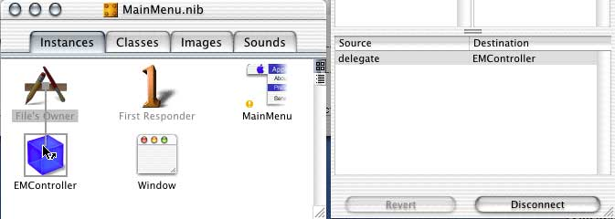

One useful function for an application to have is to shut down when all of its windows have closed. This relieves the user of having to go manually quit the application after all of the windows have disappeared. Here is the code which will later be added to EMController.m to tell EdenMath when all windows have closed.
// -------------------------------------------------------
// (BOOL) applicationShould....:(NSApplication *)theApplication
// Terminate the program when the last window closes
// -------------------------------------------------------
- (BOOL)applicationShouldTerminateAfterLastWindowClosed:(NSApplication *)theApplication
{
return YES;
}
However, for the window and the code to react to each other, the window needs to be connected up to the EMController class.
- In the MainMenu.nib window, click on the Instances tab if it isn't already selected.
- CTRL-click and drag a connection line from the Window icon to the EMController icon. In the Show Info palette, click the Connect button.
- Repeat this process with the File's Owner icon to the EMController.
